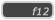

GameMaker Studio 2 IDE acepta la entrada de mouse y teclado, y muchas operaciones se pueden llevar a cabo utilizando una u otra o ambas. En general, puede hacer clic con el botón izquierdo del mouse  para seleccionar cualquier cosa, use
para seleccionar cualquier cosa, use  /
/  +
+  para seleccionar varios elementos, mantener
para seleccionar varios elementos, mantener  arrastrar elementos a diferentes muelles o a los espacios de trabajo, y también
arrastrar elementos a diferentes muelles o a los espacios de trabajo, y también  para abrir menús específicos del contexto. Tenga en cuenta que si está ejecutando GameMaker Studio 2 en un sistema macOS y está usando un solo botón, use
para abrir menús específicos del contexto. Tenga en cuenta que si está ejecutando GameMaker Studio 2 en un sistema macOS y está usando un solo botón, use  +
+  para hacer clic con el botón derecho del mouse
para hacer clic con el botón derecho del mouse  .
.
También hay una gran cantidad de atajos de teclado que se pueden usar para navegar por los diferentes elementos del espacio de trabajo y editores de recursos, y aunque puede encontrar una lista completa aquí, repasaremos rápidamente algunos de los más importantes:
/
+ " Z ": Esto deshará la acción anterior y funcionará en la mayoría de los editores. También tiene varios niveles de deshacer, por lo que puede presionar esto varias veces para" revertir "los cambios.
: Esto abrirá la ventana de Resumen del espacio de trabajo que se puede utilizar para navegar rápidamente entre los elementos que están abiertos en los diferentes espacios de trabajo.
- : Esto abrirá el manual. Tenga en cuenta que al usar el código DnD™ o GML también puede seleccionar una acción o función (o palabra clave o lo que sea) y luego presione o haz clic en el botón central del mouse
para abrir el manual en la página relevante.
- : Esto se puede usar para contraer o expandir todas las diferentes ventanas acopladas en el IDE.


Aparte de esos métodos de entrada, también hay soporte limitado para dispositivos de lápiz, y también un modo especial para aquellas personas que trabajan en proyectos que usan una computadora portátil. Ambos se explican a continuación:
Si está utilizando GameMaker Studio 2 en una computadora portátil, tendrá una opción adicional en la parte superior de IDE para el modo portátil:
Esta será activada por defecto, pero puede desactivarse si lo prefiere al alternar este botón. El modo portátil se combina con algunas herramientas en el IDE para que sea una experiencia mucho mejor cuando se usa un touchpad, simplificando las 3 interacciones principales del mouse: panorámica, zoom y desplazamiento. Utiliza dos teclas modificadoras para hacer esto: Izquierda
. Cuando el modo portátil está encendido, Izquierda
Una última cosa que mencionaremos aquí es que el IDE para GameMaker Studio 2 también tiene un soporte mínimo para pantallas táctiles. En todos los sistemas operativos, puede usar la pantalla táctil para hacer clic y arrastrar elementos en el espacio de trabajo principal, y admitimos 2 punteros simultáneos, donde un segundo toque realizará un clic con el botón derecho. Tenga en cuenta que en Windows 8 y Windows 8 superiores, GameMaker Studio 2 IDE también admitirá dispositivos de lápiz.